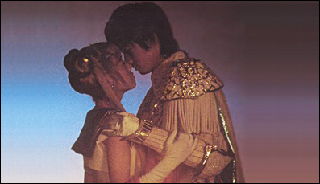

Foram produzidos, ao todo, 49 atos, além de especiais e um musical comemorativo. Os especiais são:
Make-Up! Pretty Guardian Sailor Moon! – Um especial de meia hora com o making of da produção do
seriado, a escolha das atrizes e toda a preparação para o início das gravações.
Special Act (Ato Especial) – Lançado em DVD, conta as preparações para o casamento de Usagi com
Mamoru e como as outras Sailors estão após o fim da batalha contra o Dark Kingdom. Mas uma antiga ameaça reaparece
e as guerreiras precisam lutar novamente.
Act Zero (Ato Zero) – Lançado em DVD, conta como Minako conhece Artemis e se transforma em Sailor V.
Paralelamente, mostra Usagi antes de se tornar Sailor Moon. Além disso, o DVD possui mini-histórias focadas em Tuxedo
Kamen, e uma delas mostra o surgimento do herói e uma transformação, digamos… Um pouco ousada =P (nú?)
Na onda das músicas cantadas pelas personagens, o seriado ainda teve dois especiais:
Super Dance Lessons – Neste especial, Sailor Luna, Sailor Moon e Sailor Jupiter
dão aulas de dança e ensinam os passos de dança das músicas de PGSM!
Kirari Super Live! – Apresentado no dia 02 de maio de 2004 no Teatro Yomiuri Hall
em Tóquio, esta apresentação foi feita especialmente para os ganhadores de um concurso. Na história,
as Senshi tinham que evitar que os generais roubassem a energia da platéia e em meio a toda a movimentação
dançavam e cantavam as músicas da série. Este especial foi lançado em DVD e contém como bônus os bastidores
da apresentação.
Graças as adaptações para se adequar aos dias atuais, várias bugigangas foram feitas,
como bonecas, celulares, kits de maquiagem, Luna e Artemis de pelúcia e vários brinquedos. Também foram
lançados três OSTs, Singles CDs e DVDs.
Com o fim do Live Action, os fãs esperaram por uma continuação. Mas pelo tempo que
já se passou e pelos novos acontecimentos dentro da série que remetem às outras fases, parece que será
bem difícil de acontecer… Mas não custa sonhar!

Sejam todos bem-vindos ao site sobre Sailor Moon.
Aqui você encontra tudo sobre o mangá, anime, filmes, live action e muito mais!
Olhe os cantinhos do site, participe e aproveite.